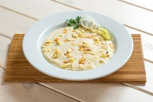

8 Recetas de sopas caseras que no te puedes perder - Recetinas

Recetinas
Recetas Aperitivos Arroces Bocadillos Carnes Cócteles Desayunos Ensaladas Hamburguesas Legumbres Licuados Panes Pasta Patatas Pescados y Mariscos Pizzas Postres Sopas y Cremas Tortillas y Huevos Verduras Recomendaciones Internacional Cocina Americana Cocina Colombiana Cocina Cubana Cocina Española Cocina Francesa Cocina Hindú Cocina Inglesa Cocina Italiana Cocina Marroquí Cocina Mexicana Cocina Oriental Cocina Panameña Cocina Peruana Cocina Rusa Cocina Venezolana Imprescindibles Niños Trucos de Cocina / Inicio / Recetas / Recomendaciones / 8 Recetas de sopa casera que no te puedes perder8 Recetas de sopa casera que no te puedes perder
Índice de Contenidos mostrar 1 Sopa de pollo 2 Sopa de acelgas 3 Sopa de verduras 4 Sopa de verduras con albóndigas 5 Sopa de brócoli y calabaza 6 Sopa de pollo con fideos 7 Sopa Minestrone 8 Sopa de arrozLas sopas caseras nunca faltan en casa y además de ser super sanas, gustan mucho a toda la familia y son ideales para los días de frío. Existen multitud de recetas de sopa que podemos encontrar y en esta ocasión, quiero compartir contigo la primera entrega de una selección de las mejores de ellas.
Como podrás comprobar en cada una de las recetas que muestro posteriormente, su elaboración es muy sencilla y además, puedes encontrar de todo tipo; sopas de verdura, sopas con carne y sopas con fideos. Elige la que más te guste y nos ponemos manos a la obra en la cocina!!
Sopa de pollo
La sopa de pollo es una de las más populares en todo el mundo. Su elaboración es muy sencilla, y aunque la cocción de la misma debe de ser relativamente lenta, al finalizar podremos disfrutar de una deliciosa sopa muy nutritiva que nos hará entrar en calor.
Ver recetaSopa de acelgas
Todos sabemos que es muy sano incluir las verduras en nuestro menú diario, pues tienen unas propiedades nutritivas que ayudan a cuidar de nuestra salud. En esta ocasión quiero mostrarte cómo se hace una rica sopa de acelgas a la que podrás añadir si lo deseas una zanahoria troceada, unos fideos o incluso un poco de arroz.
Ver recetaSopa de verduras
La sopa de verduras es ideal para cuidarnos por dentro o si queremos seguir una buena dieta equilibrada . Es muy baja en calorías y además es muy rica en fibra, siendo muy fácil su elaboración. Disfruta de una sopa muy sabrosa para incluirla como primer plato en tu menú de la comida.
Ver recetaSopa de verduras con albóndigas
Existen muchas formas de hacer una buena sopa casera , siendo una de ellas esta sopa con verduras y albóndigas. A mi particularmente, es una de las recetas de sopa que más me gusta. Se caracteriza por ser una sopa de verdura que se prepara junto con unas pequeñas albóndigas de carne para darle a este plato mas sabor y consistencia.
Ver recetaSopa de brócoli y calabaza
Si te gusta el brócoli y la calabaza, te invito a conocer una receta de sopa que seguro te va a encantar. En esta ocasión preparamos una sopa de brócoli con calabaza que te llenará de nutrientes y energía. Sigue los pasos indicados y disfruta de una sopa muy sabrosa.
Ver recetaSopa de pollo con fideos
Es posible que sea una de las recetas de sopa más conocida y popular a nivel mundial. La sopa de pollo con fideos preparada de forma tradicional, nada tiene que ver con la que nos venden en los supermercados. Si quieres saborear una auténtica sopa casera, solo tienes que acceder a esta receta.
Ver receta Sopa minestrone casera.Sopa Minestrone
En Italia también son muy soperos, prueba de ello es esta sopa Minestrone. Se trata de una sopa de verdura a la que añadimos algún tipo de pasta corta para que el plato sea más consistente. Tienes que probarla con coditos o macarrones cortos, está realmente deliciosa.
Ver recetaSopa de arroz
Uno de los ingredientes principales de esta sopa de arroz es el pollo, por lo tanto, estamos ante una de las recetas de sopa más completas que existe, ya que nos aporta verdura, cereales y carne en el mismo plato. Su preparación es muy sencilla y la tendrás lista en un poco más de 30 minutos.
Ver recetaLas sopas y caldos tienen que formar parte de nuestra dieta, siendo aconsejable incluirlas al menos 2 o 3 veces en el menú semanal. Así que elige la receta de sopa que más te guste y comienza a cuidarte!!
Compartir 3K Pin 8 WhatsApp 3K CompartirNota: 3,33/5 (3 votos)
Valora esta receta
Recetas Relacionadas
7 Recetas de sopas frías Sopa de pollo y maíz Sopa de langostinosEtiquetado: Sopas Categoría: Recomendaciones , Sopas y Cremas
Deja una respuesta Cancelar la respuesta
Últimas Recetas de Cocina
Hamburguesas rellenas de verduras y huevo Tarta sencilla de café y chocolate 12 Recetas de cenas rápidas y saludables Poke bowl de langostinos 7 Recetas de sopas frías Nachos caseros hechos con tortitas Salsa de chile dulce Cuscús con verduras y currySuscripción a Recetinas
¿Quieres recibir cada semana las nuevas recetas de cocina en tu email?
Suscríbete
Recetas por categoría
Índice de recetas Aperitivos Arroces Bocadillos Carnes Cócteles Ensaladas Hamburguesas Legumbres Licuados Panes Pasta Patatas Pescados y Mariscos Pizzas Postres Sopas y Cremas Tortillas y Huevos VerdurasNuestras recetas más vistas
Milanesas de jamón y queso Garbanzos con espinacas y gambas Crema chantilly casera Papas al ajo y limón Brochetas de pollo con miel Croquetas de calabacín Canelones fríos de jamón cocidoRecetas económicas
Ensaladilla rusa Lentejas con verduras Coca de yogur Tallarines con crema de leche Salchichas a la cerveza con patatas Arroz con pollo Bolitas de patataSelección especial de recetas
12 Recetas de arroz deliciosas y fáciles de preparar 8 recetas fáciles para hacer tortilla 10 Recetas de ensalada que se pueden convertir en tus preferidas 40 Recetas de postres caseros 12 Recetas de espaguetis que deberías saber hacerCopyright © 2021 · Recetinas · ¿Quienes somos? · Términos de uso · Política de cookies
